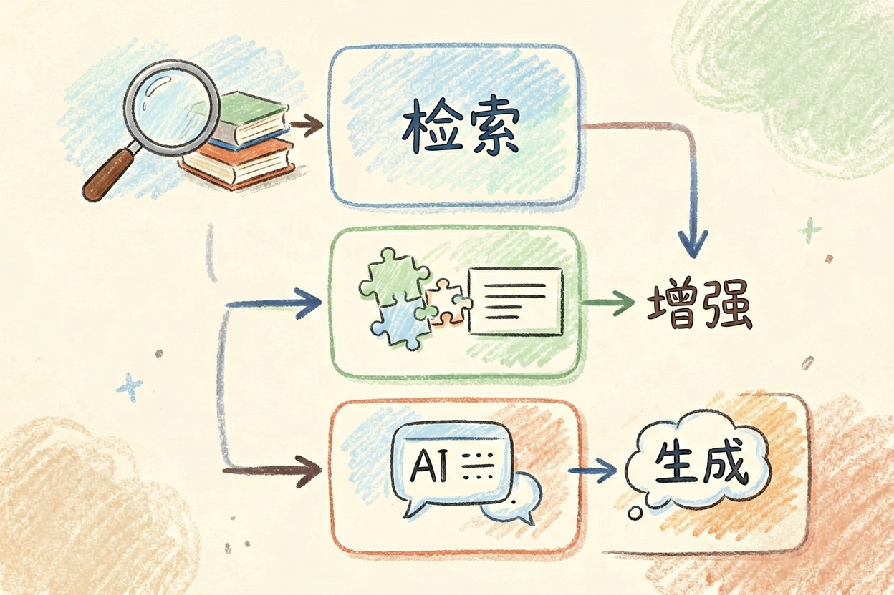
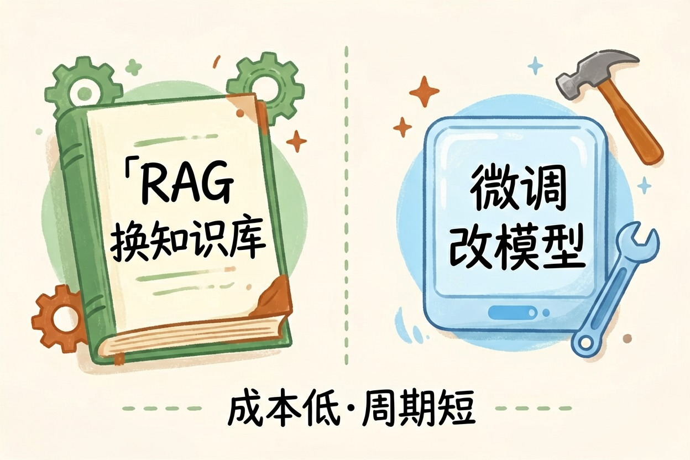
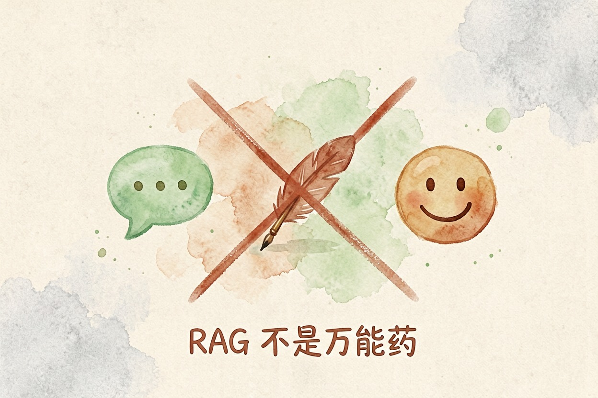

RAG 是什么？给 AI 装一个「知识库外挂」
RAG 就是让 AI 在回答问题之前先去查一下你的资料库，而不是凭记忆瞎编。它解决了 AI 最头疼的问题：胡说八道。
RAG 是什么：一句话解释
RAG 是什么？一句话：让 AI 先查资料，再回答。你可以把它想成一场开卷考试。AI 先翻书，再答题。翻到了，照着资料说。翻不到，就说不知道。它不再瞎编。
RAG 全称「检索增强生成」。这个概念由 Meta AI 在 2020 年提出。原始论文见 Retrieval-Augmented Generation for Knowledge-Intensive NLP Tasks{:target="_blank"}。中文读者想再读一层，可以看百度百科的检索增强生成词条{:target="_blank"}。
为什么需要 RAG——AI 不擅长的事

普通 AI 靠训练数据回答。没见过的知识，它只能编。你的公司内部文件，它没见过。昨天刚出的新闻，它也不知道。这些正是 RAG 要补的缺口。
RAG 是什么，换个角度看：它是给 AI 装了个外挂知识库。回答前，AI 先去库里检索。找到相关内容，再组织语言。答案有依据，还能标出处。个人用户同样受益：把资料喂进去，问什么都有依据，不用怕它拿网上二手信息糊弄你。
想一想：为什么「RAG 是什么」最近总被问起？因为企业都想让 AI 用自己家的文档，而不是全网的内容。内部 SOP、产品手册、客服话术，这些资料普通 AI 都接触不到。装上 RAG，它们才真正能被 AI 用起来。答错了，还能顺着出处追回去改。这对企业来说，是质的差别。
RAG 怎么工作：三步走

RAG 是什么，拆开看就是三步：检索、增强、生成。
第一步 检索：从知识库里找出与问题相关的段落
第二步 增强：把段落拼进提示词，作为回答依据
第三步 生成：AI 基于资料组织答案举个客服场景。客户问「退款要几天」。AI 先在你的售后文档里找。找到「7 个工作日内到账」，再据此回答。答案有出处，还能附上链接。这就是 RAG 的日常用法。
再举个学习场景。你有一堆课堂笔记。问 AI「第三章讲了什么」。它先翻你的笔记，再总结。回答基于你自己的资料。整套流程对使用者是透明的，你只看到「AI 查了资料再回答」这一个结果。RAG 是什么的实用性，就在这里体现。
RAG 和微调的区别

RAG 改资料，微调改模型。RAG 不动模型，只换知识库。改内容几秒钟生效，还省钱。微调要重新训练。成本高，周期长。适合风格和语气固定不变的任务。多数团队先用 RAG 验证需求，跑通了再考虑要不要微调。
问 RAG 和微调哪个好？答案是看场景。资料常更新，选 RAG。能力要定制，选微调。把 RAG 是什么弄明白，再决定要不要上微调。多数知识库场景，RAG 更划算。因为它不用重训模型，改动快，投入小。
什么情况下不需要 RAG
简单问答不需要。创意写作不需要。纯聊天也不需要。RAG 不是万能药。但做知识库，它几乎必用。企业想把内部文档变成能问答的 AI，RAG 就是那条最短的路。想给 AI 喂自己的资料，绕不开 RAG 是什么这个问题。
想理解 RAG 依赖的大模型，看大模型是什么。想了解能自动做任务的 AI，看AI 智能体是什么。RAG 常和多模态搭配使用，见多模态 AI 是什么。更多工具在AI 工具导航。
最后说一句反的：别以为 RAG 能解决一切胡说。资料库里没有的内容，它照样答不好。别偷懒不更新知识库。RAG 是什么并不难懂，真正决定效果的是你喂进去的资料新不新；资料过期，RAG 再强也白搭。
本文信息核对于 2026-08-06。AI 产品的价格、免费额度与功能变动频繁，实际以各工具官网当前说明为准。